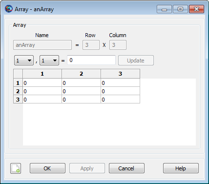

Array
Array — A user-defined one- or two-dimensional array variable
Description
The Array resource is used to store a one- or two-dimensional set of numeric values, such as a vector or a matrix. Individual elements of an array can be used in place of a literal numeric value in most commands.
Arrays must be dimensioned at the time of creation, using the following syntax:
Create Array anArray[rows, columns]If only one dimension is specified, a row vector is created.
Array values are initialized to zero at creation. Values can be assigned individually using literal numeric values or (in the Mission Sequence) Variable resources, Array resource elements, resource parameters of numeric type, or Equation commands that evaluate to scalar numeric values.
anArray(row, column) = valueIf only one dimension is specified during assignment,
row
An Array can also be assigned as a whole in the Mission Sequence using another Array resource or an Equation that evaluates to an array. Both sides of the assignment must be identically-sized.
anArray = array expressionFields
The Array resource has no fields; instead, the resource elements themselves are set to the desired values.
| Field | Description | ||||||||||||
|---|---|---|---|---|---|---|---|---|---|---|---|---|---|
rows | The number of rows (during creation), or the row
being addressed. The total size of the array is
| ||||||||||||
columns | The number of columns (during creation), or the
column being addressed. The total size of the array is
| ||||||||||||
value | The value of the array element being addressed.
|
GUI
 |
The GMAT GUI lets you create multiple Array resources at once without leaving the window. To create an Array:
In the Array Name box, type the desired name of the array.
In the Row and Column boxes, type the desired number of rows and columns, respectively. To create a one-dimensional array, set Row to 1.
Click the => button to create the array and add it to the list on the right.
Click the Edit button to edit the array element values.
You can create multiple Array resources this way. To edit an existing array in this window, click it in the list on the right. Click Edit to change the element values, or edit the Row and Column values. You must click the => button again to save changes to the size of the array.
|  |
You can edit the elements of an Array by either clicking Edit while creating an array, or by double-clicking the array in the resources tree in the main GMAT window. The edit window allows you to change array elements individually using the row and column lists and clicking Update, or by directly entering data in the table in the lower portion of the window. The data table recognizes a few different mouse and keyboard controls:
Click a cell once to select it
Click a selected cell again, double-click an unselected cell, or press F2 to edit the value
Use the arrow keys to select adjacent cells
Click the corner header cell to select the entire table
Drag the column and row separators to adjust the row height or column width
Double-click the row or column separators in the heading to auto-size the row height or column width
Remarks
GMAT Array resources store an arbitrary number of numeric values organized into one or two dimensions, up to a maximum of 1000 elements per dimension. Internally, the elements are stored as double-precision real numbers, regardless of whether or not fractional portions are present. Array resources can be created and assigned using one or two dimension specifiers. This example shows the behavior in each case:
% a is a row vector with 3 elements
Create Array a[3]
a(1) = 1 % same as a(1, 1) = 1
a(2) = 2 % same as a(1, 2) = 2
a(3) = 3 % same as a(1, 3) = 3
% b is a matrix with 5 rows and 3 columns
Create Array b[5, 3]
b(1) = 1 % same as b(1, 1) = 1
b(2) = 2 % same as b(1, 2) = 2
b(3) = 3 % same as b(1, 3) = 3
b(4) = 4 % error: b(1, 4) does not exist
b(4, 3) = 4 % row 4, column 3